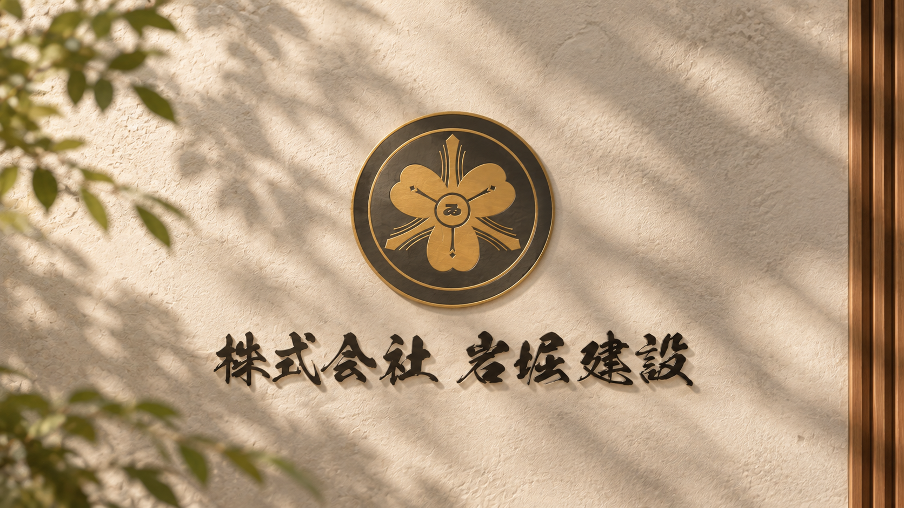
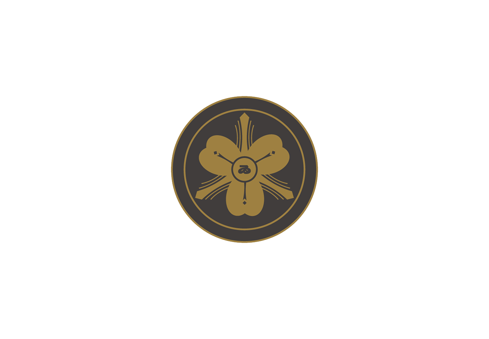
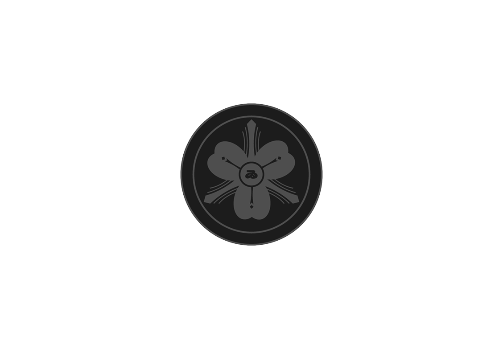
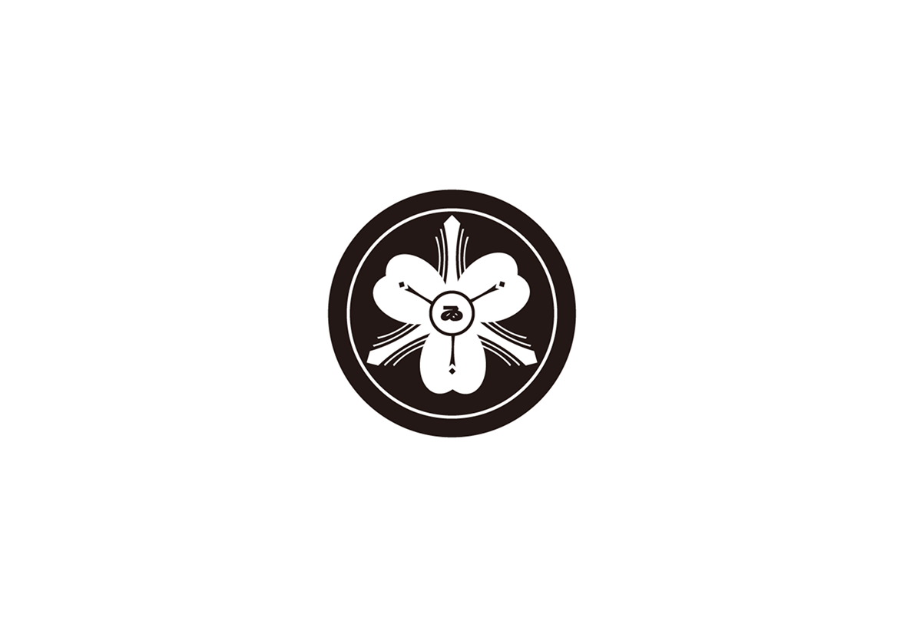
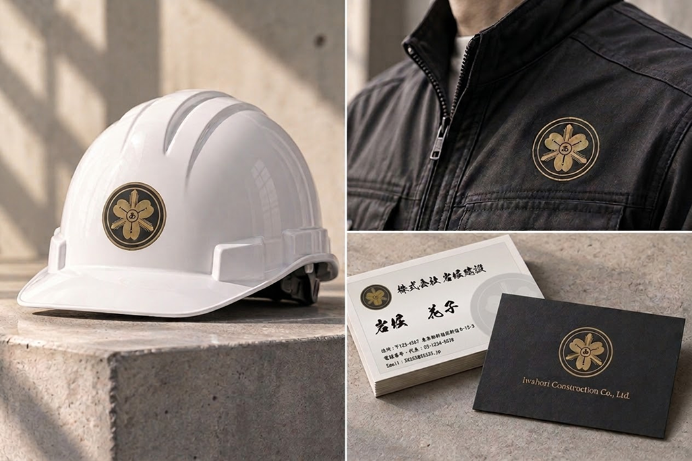

Iwahori Construction Co.,Ltd

受け継がれる想いを、現代のシンボルへ。伝統と建築美が交差する、新たな家紋のかたち。
岩堀家に受け継がれる家紋を現代的に再解釈し、伝統と信頼関係を大切にする建設会社のロゴマークを制作しました。
家紋が持つ歴史や意匠を継承しながら、建築・建設業にふさわしい力強さと現代的な美しさを融合させています。
01 PRIMARY LOGO

02 MONOCHROME

03 REVERSE

岩堀家の家紋である「刀ばみ」をモチーフに、伝統的な意匠と建設会社らしい力強さを融合させました。
家紋の形状をベースに、建物や柱を連想させるシャープなフォルムへと再構築。建築・建設業とのつながりを表現しています。中央には「イワホリ」の頭文字である「イ」を組み込み、伝統的な意匠の中に独自性をプラスしました。
さらに、全体を円で囲むことで、企業としての信頼性や結束力、安定感を象徴しています。カラーには炭黒と利休金茶を採用。格式と重厚感を持たせながら、職人の誠実さや品質へのこだわりを感じさせる配色に仕上げました。
